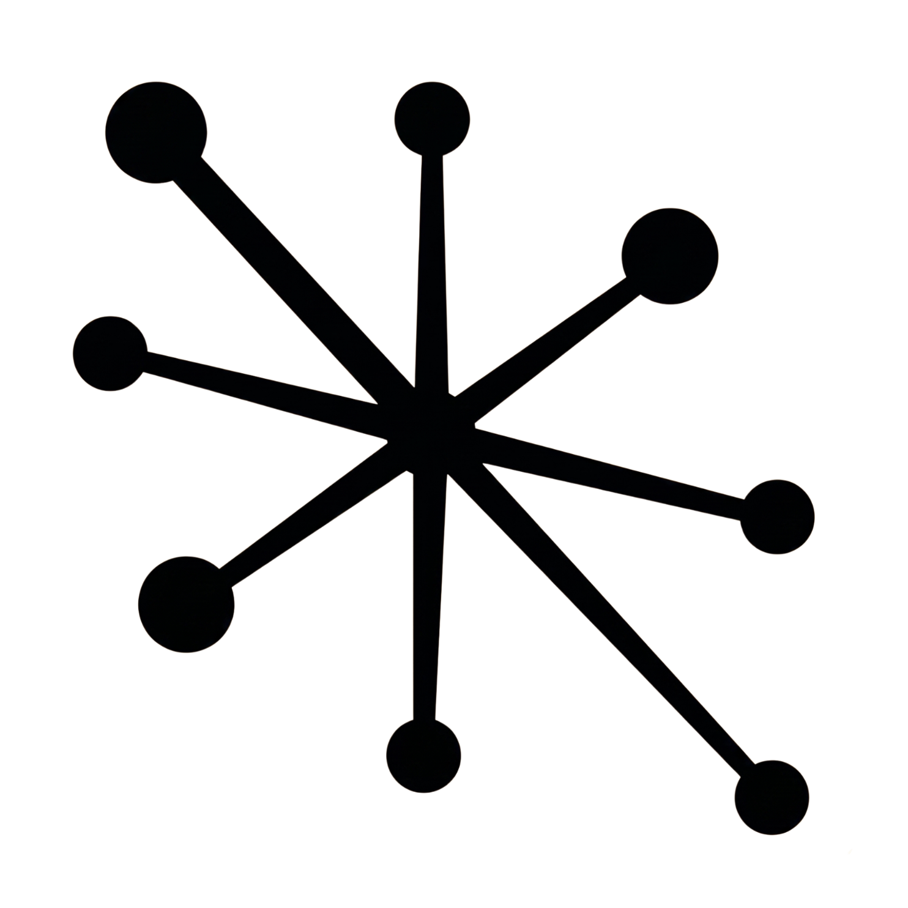

Contexto:
objetivos, público, tom e exemplos aprovados por cliente.

AtomicaProposta de formação para a MarcAsério Profissionais de marketing e responsáveis de agências | 2 horas | 250 €
Sessão prática para compreender o AI OS e organizar um espaço de trabalho partilhado em ChatGPT ou Claude.

O uso individual repete contexto, dispersa ficheiros e aprendizagens e aumenta inconsistências entre projetos.
Um “segundo cérebro” reutiliza contexto em fluxos completos. A equipa mantém direção, revisão e decisão.

Organizar um espaço de trabalho no ChatGPT ou Claude:
objetivos, público, tom e exemplos aprovados por cliente.
tarefa, critérios, limites e formato.
briefing → pesquisa ou criação → verificação.
confirmar factos e marca; guardar correções reutilizáveis.
A demonstração será numa ferramenta. Partilha e automações variam conforme plano, permissões e conta.

Do chat isolado ao AI OS e ao segundo cérebro
Construção: contexto, instruções e um fluxo em ChatGPT ou Claude
Aplicações em estratégia, criação, análise e operação
Segurança, RGPD, AI Act e medição de valor
Perguntas e primeiro caso a testar
sintetizar informação, testar hipóteses e preparar briefings.
adaptar propostas por canal com as orientações de cada cliente.
resumir dados e preparar relatórios para revisão.
reutilizar processos e listas de verificação, reduzindo a dependência de chats e ficheiros individuais.
apoiar propostas, apresentações e acompanhamento comercial para impulsionar iniciativas da agência.
Resultados dependem do contexto, das ferramentas, da revisão e da adoção.

finalidade, base legal, transparência e dados mínimos; respeitar a oposição a marketing direto e perfilagem associada.
transparência em chatbots e marcação técnica de conteúdo sintético; identificar deepfakes e textos de interesse público sem revisão editorial. Nem toda copy exige rótulo visível.
usar ferramentas aprovadas, separar clientes e não carregar dados pessoais ou confidenciais sem autorização.
evitar manipulação que explore vulnerabilidades e possa causar dano significativo.
rever factos, fontes, direitos e resultados antes de partilhar.
AndROI: exemplo de arquitetura em desenvolvimento na Atomica; não é o foco da formação.

utilização, consistência com a marca e correções.
tempo e retrabalho numa tarefa comparável, antes e depois.
benefícios comprovados face aos custos das ferramentas e do trabalho.
resultados face ao investimento, conforme dados e atribuição disponíveis.
Tempo libertado é capacidade, não poupança automática. A formação não garante retorno.

2 horas para profissionais de marketing e responsáveis de agências.
No final, terão um mapa do AI OS, um exemplo de configuração e um fluxo para testar, medir e evoluir.
Combinar formato, data, participantes e condições comerciais.
Escolher a ferramenta e validar contas e materiais autorizados.
Inclui apresentação, demonstração e discussão. Não inclui implementação, integrações, licenças ou acompanhamento posterior.